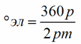
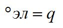

Перейти на главную страницу справочника.
Фазная зона трёхфазной обмотки, и какую схему укладки выбрать.
- При открытии какой либо странички справочника со схемами укладки трёхфазных электродвигателей, видим большое количество схем на нужное нам число пазов и оборотов. Зачем столько схем? На какую схему можно заменить заводскую обмотку без изменения электрических и магнитных характеристик электродвигателя? Какую схему укладки выбрать при переходе с однослойной на двухслойную обмотку?
- Поможет разобраться в этом фазная зона обмотки.
Обмотки, в которых фазные зоны заняты только сторонами катушек своей фазы, называются обмотками со сплошной фазной зоной.
Обмотки, в которых некоторые стороны катушек размещаются на фазных зонах соседних фаз, называются обмотками с несплошной фазной зоной.
Рассчитать ширину сплошной фазной зоны с одинаковым направлением мгновенных значений тока для одной стороны катушки (катушечной группы) с диаметральным шагом в электрических градусах:
Ширина сплошной фазной зоны в электрических градусах для трёхфазных двигателей 60ºэл, для шестифазных двигателей 30ºэл, для девятифазных двигателей 20ºэл, для двенадцатифазных двигателей 15ºэл и т.д.
Число пазов для одной стороны катушки (катушечной группы) с диаметральным шагом, занимаемое сплошной фазной зоной с одинаковым направлением мгновенных значений тока, равно числу пазов на полюс и фазу:
Между этими двумя формулами ставим знак равенства. Просто в одой формуле расчёт сплошной фазной зоны в электрических градусах, а в другой в числе пазов:
Фазные зоны в обмотке электродвигателя 1500 об/мин, Z1=36.
Число пазов на полюс и фазу q=3 при Z1=36 и 2p=4. Фазная зона занимает 3 паза статора (q=3).
Фазные зоны в обмотках электродвигателей с дробным числом пазов на полюс и фазу.
Число пазов на полюс и фазу q=1,5 при Z1=36 и 2p=8. Фазная зона занимает 1,5 паза статора (q=1,5).
Фазные зоны в совмещённых обмотках электродвигателей 3000 об/мин, Z1=24.
Число пазов на полюс и фазу q=4 при Z1=24 и 2p=2. Фазная зона основной обмотки занимает 2 паза статора (q=2) для одной стороны катушки. Фазная зона совмещённой обмотки занимает 2 паза статора (q=2) для одной стороны катушки.
28.03.2019 г.